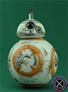
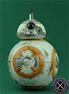
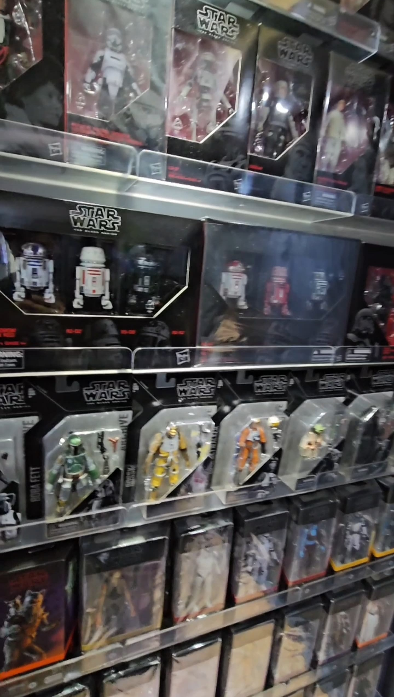
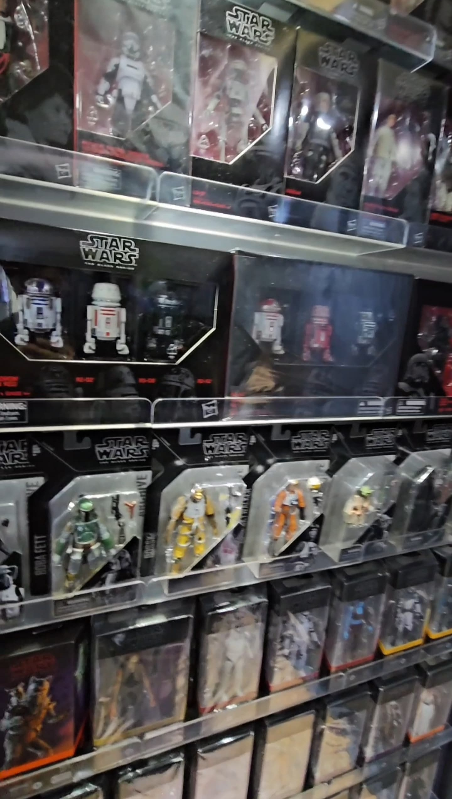
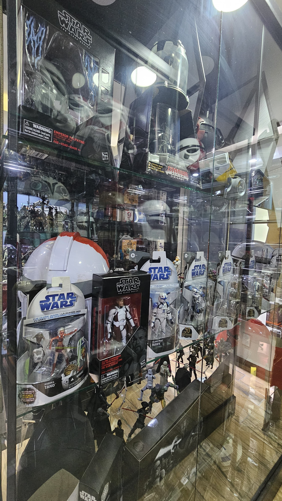
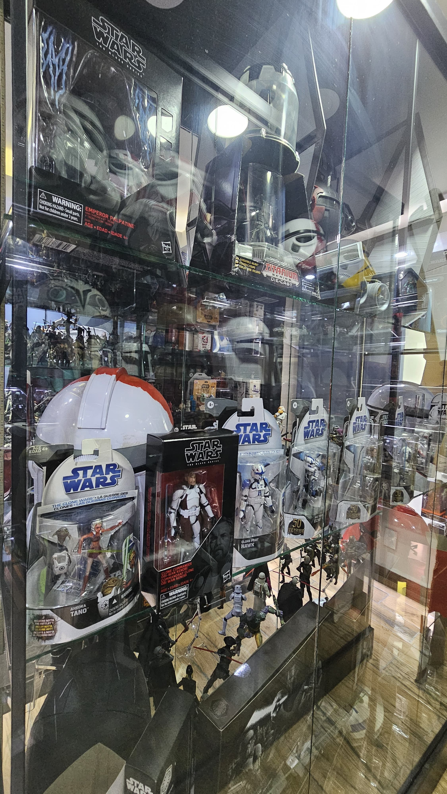
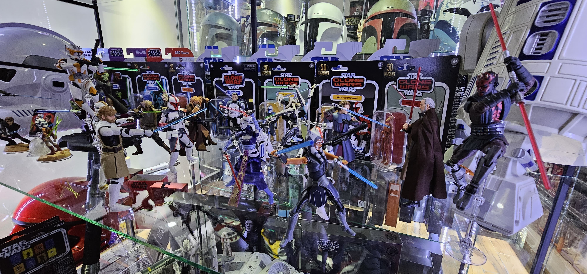
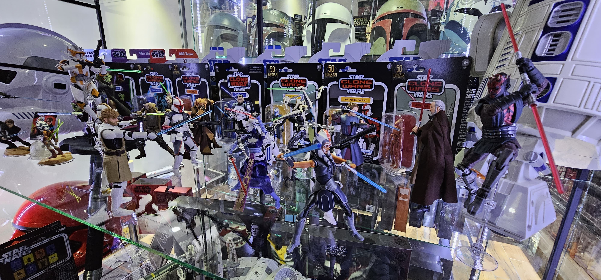

Coleccionables de Star Wars The Black Series
En una galaxia no tan lejana...
Se avecina el destino final de toda colección digna de un verdadero maestro Jedi (o Lord Sith). A continuación, se revelarán los coleccionables legendarios que aún faltan para completar la mítica colección de Star Wars: The Black Series.
Cada figura será presentada en orden de lanzamiento, categorizada por línea, acompañada de su imagen sagrada y un hololink directo para adquirirla o conocer todos los detalles de su empaque y fotografías.
Pero no todo es futuro... también podrás explorar el archivo galáctico de figuras ya reunidas, con fotografías dignas del archivo Jedi y detalles que celebran cada conquista coleccionable.
¡El equilibrio de la Fuerza en tu colección está en juego!


")
")
")

")


") 

")


 



 

 
